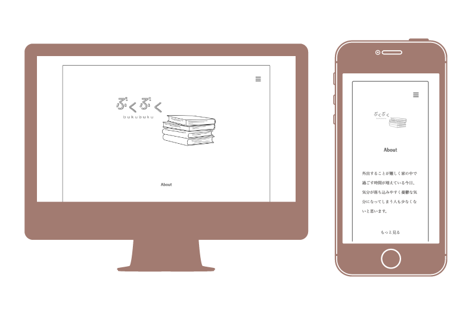

ぶくぶく
制作期間：3ヶ月
使用ツール：Illustrator,Dream weaver
課題制作
著作権の切れた短編小説を紹介するwebサイトを制作しました。普段本を読まない人にも興味を持ってもらえるように、アニメーションを追加したり、文章を読むことへの抵抗感を減らす工夫をしたりして、興味を持ってもらえるようにしました。10作品読めるようになっています。
サイトはこちら→ぶくぶく
本の表紙のデザイン
白を基調としたシンプルで上品なデザインにしました。また、作品の世界観に合わせたタイトルロゴも制作しました。
アニメーション
興味を惹くサイトにするために、桜が降るアニメーションや、ロゴが描画されるアニメーションなどを小説ページの初めに追加しました。